Chronik
Die Geschichte eurer Reise durch die vier Reiche
Willkommen in Atherion
Atherion zittert. Dreihundert Jahre nach dem grossen Sternenfall, der Magie in die Welt brachte, herrscht die Inquisition des Luminarismus mit eiserner Hand. In dem nebligen Dorf Holzhein, an der Grenze zwischen Wald und Grossem Strom, versammeln sich fünf Reisende — verbunden durch ein Schicksal, das grösser ist als sie ahnen.
Die Sterne halten den Atem an. Eure Saga beginnt.
DIE REISEGEFÄHRTEN
SESSIONEN
Session 1 — Die Nacht des Erwachens
Holzhein · Stufe 1
Personen
Bekannte Gesichter und gefürchtete Namen in Atherion
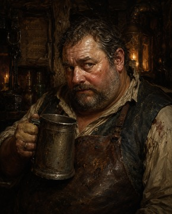
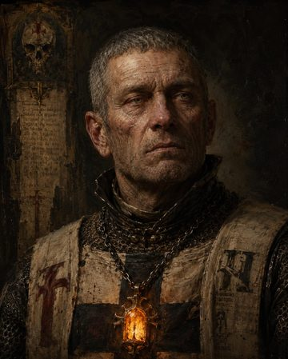
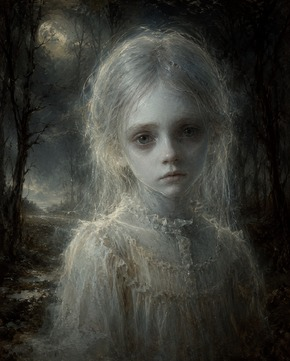
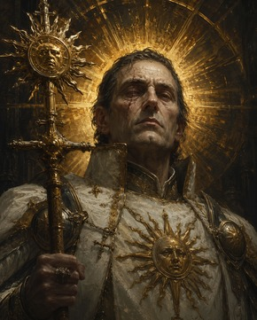
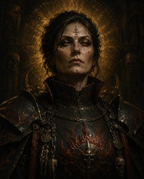
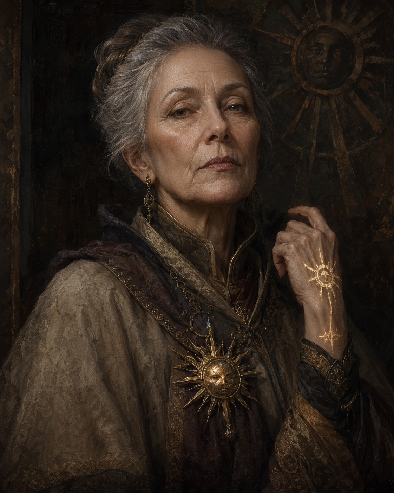
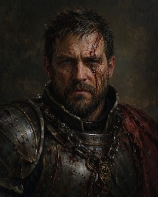
Orte
Bekannte Siedlungen, Ruinen und Wildnisse in Atherion
- Gasthaus «Zum Goldenen Ast» — Treffpunkt der Reisenden, Wirt Berthold Knappe
- Dorfplatz mit Sylva-Schrein — Inquisitionsbekanntmachungen angeschlagen
- Schmiede von Marta Brandt — Informantin, hilft gegen Bezahlung
- Friedhof am Waldrand — Manche Gräber sind frisch aufgebrochen. Von innen.
- Das Haus der Dursts — Am nordöstlichen Waldrand. Niemand redet gern darüber.
Fraktionen
Mächte, Orden und Netzwerke, die Atherion formen
Der Luminarismus verehrt die zwei Götter: Sylva, die Sonnengöttin des Lebens und Feuers, und Noctis, den Mondgott der Nächte und Geheimnisse. Priester — die Luminari — führen das Reine Licht in heiligen Stätten wie der Zidatelle des Lichts. Tempel und Schreine für Sylva und Noctis sind in jedem Dorf Atherions zu finden.
Der Luminarismus erklärt die Kosmische Energie des Sternenfalls als Fluch — als Verunreinigung des göttlichen Gleichgewichts. Wer Magie trägt oder wirkt, trägt nach dieser Lehre einen Seelenschaden, der das ganze Volk gefährdet. Hochprälat Valerian Lichtschwert führt diese Doktrin zur absoluten Konsequenz.
Die Inquisition ist der Langen Arm des Hochprälats. Inquisitoren in weissen Mänteln patrouillieren Dörfer und Städte, Leuchtamulette zur Magiedetektion in der Faust. Hausdurchsuchungen, Verhöre, Scheiterhaufen — die Schwertflamme kennt keine Gnade.
Jeder Bürger Atherions benötigt ein Zertifikat der Reinheit — ein Dokument, das bescheinigt, keine Kosmische Energie zu tragen. Wer keines hat, wird registriert. Wer beim Zaubern erwischt wird, wird abgeführt. Was dann passiert, wird nicht gesagt.
«Die Berührten» — so nennen Einheimische jene, die von der Kosmischen Energie des Sternenfalls erwacht sind und Magie wirken können. In Atherion sind sie Geächtete: verfolgt, verjagt, verbrannt. Viele fliehen nach Arkanis, Salzklinge oder verstecken sich in den Wäldern.
In anderen Reichen ist es anders: In Arkanis leben Magier-Enklaven offen, in Salzklinge schätzen Piraten Windmagie, in Auregant zählt Gold mehr als Glaube. Doch in Atherion bedeutet Magie — sichtbar oder nicht — Lebensgefahr.
Reisende flüstern von einer Schmugglerbande, die Berührte aus Atherion herausschmuggelt — über Flüsse und dunkle Waldwege, für Gold. Manche sagen, sie operieren von Reinheim aus. Andere sagen, ihr Anführer trägt Krähenfedern im Haar.
Verfolgungsgrad
Inquisition Atherion — Bedrohungsanzeiger
Die sechs Stufen
Keine Vorkommnisse. Ihr seid frei.
Flüsterer haben etwas bemerkt.
Ein Wächter beobachtet euch.
Inquisitor in der Gegend.
Ihr wurdet gemeldet.
Sie leitet die Jagd persönlich.
▲ Stufe erhöhen
| Magie in Menschenmenge | +5 |
| Magie in der Stadt | +3 |
| Tarnung durchschaut | +4 |
| Verborgen in Siedlung gezaubert | +1 |
| Wildnis / Einsamkeit | ±0 |
▼ Stufe senken
| Reich wechseln | −5 |
| Ablassbrief erwerben | −3 |
| Long Rest / Ortswechsel | −2 |
| Verkleidung anlegen | −2 |
| Bestechung | −2 |
| Short Rest + Ruhe halten | −1 |
| Verstecken (Stealth gelingt) | −1 |
♛ Verkleidungsset — Tarnung & Entlarvung
Anlegen: Geschicklichkeit (Verkleidungsset, Übungsbonus). Bei Erfolg: Verfolgungsgrad −2.
Entlarvung: Ein NPC würfelt Weisheit (Einsicht) oder Intelligenz (Nachforschung) gegen eure Probe. Gelingt es ihm: +4 — sie kennen nun euer Gesicht.
Ab Stufe 4: NPCs würfeln mit Vorteil. Seraphine hat immer Vorteil.
Händler & Angebote
Waren, Preise und Dienste in Holzhein
| Artikel | Preis |
|---|---|
| Speisen & Getränke | |
| Dünnes Holzheiner Bier (Pint) | 2 KM |
| Einfaches Mahl (Brot, Schmalz, Käse, Lauch) | 4 KM |
| Eintopf des Hauses | 8 KM |
| Geräucherter Waldschinken | 3 SM |
| Rotwein aus dem Süden (Karaffe) | 5 SM |
| Kräuterschnaps «Holzheinbrand» | 1 SM |
| Unterkunft | |
| Scheunenlager (Stroh, 2 Hühner inkl.) | 2 SM |
| Gemeinschaftskammer (4 Betten) | 4 SM / Person |
| Privatzimmer «Die Eichenstube» (mit Riegel) | 8 SM |
| Reisebedarf | |
| Fackel (Bündel zu 5) | 1 SM |
| Feuerstein & Stahl | 5 KM |
| Reiserationen (3 Tage) | 2 SM |
| Schreibset (Tinte, Feder, Pergament) | 5 SM |
| Heilkrautbündel (+1 auf Stabilisierung) | 5 SM |
| Kuriosum des Hauses | |
| „Stein der Wettervorhersage“ ✦ | 3 GM |
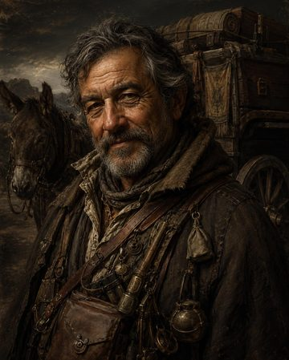
| Artikel | Preis |
|---|---|
| Kräuter, Tränke & Alchimie | |
| Heiltrank (2W4+2 TP) | 50 GM |
| Heilkräuter-Balsam (1W4 TP) | 8 GM |
| Antitoxin-Fläschchen (1 Std. Vorteil vs. Gift) | 50 GM |
| Alchimistenfeuer (1W4 Feuer/Runde) | 50 GM |
| Säure-Fläschchen (2W6 Säureschaden) | 25 GM |
| Reisebedarf & Zubehör | |
| Seil (15 m, Hanf) | 1 GM |
| Laterne (mit Öl) | 6 SM |
| Heilerskit | 5 GM |
| Fallensteller-Kit | 5 GM |
| Diebeswerkzeug „für Schlosserei“ | 25 GM |
| Spiegel (kleiner Stahl) | 5 GM |
| Verkleidungsset | 25 GM |
| Kuriositäten | |
| Schriftrolle des Lesens | 45 GM |
| „Allsehendes Auge“ ✦ (Visionen ohne Nutzen) | 120 GM |
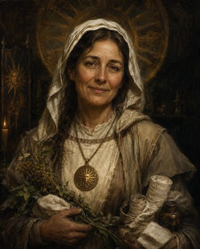
| Artikel | Preis |
|---|---|
| Heilkräuter & Medizin | |
| Schafgarbenverband (5 St.) | 3 SM |
| Beruhigungstee «Noctis’ Schlummer» (3 Port.) | 5 SM |
| Heilertasche / Healer’s Kit (10 Anw.) | 5 GM |
| Entgiftungstrank «Reines Herz» (selten) | 40 GM |
| Fromme Waren & Symbole | |
| Heiliges Symbol (Sylva-Sonnenscheibe, Fokus) | 5 GM |
| Räucherkerzen (Luminari-Weihrauch) | 2 SM |
| Sylva-Reliquie (Holzkette) | 1 GM |
| Weihwasser-Fläschchen (2W6 vs. Untote/Teufel) | 25 GM |
| Verkleidungsset «Pilger» (+Vorteil vs. Luministen) | 15 GM |
| Nebelkrauttinktur (Täuschung +2, 1 Szene) | 12 GM |
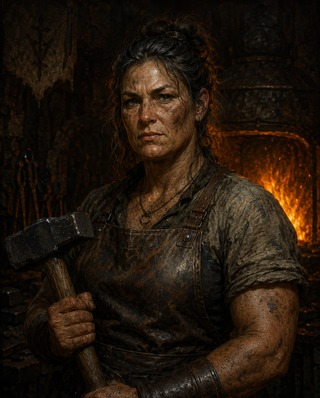
| Artikel | Preis |
|---|---|
| Waffen | |
| Dolch (1W4, Finesse, Wurf) | 2 GM |
| Speer (1W6, Vielseitig 1W8) | 1 GM |
| Handaxt (1W6, Wurf) | 5 GM |
| Kurzschwert (1W6, Finesse, Leicht) | 10 GM |
| Leichte Armbrust (1W8, mit 20 Bolzen) | 25 GM |
| Vorschlaghammer (2W6, Schwer, Zweihändig) | 2 GM |
| Rüstung & Schutz | |
| Lederrüstung (RK 11 + GES) | 10 GM |
| Schild (Holz & Eisen, +2 RK) | 10 GM |
| Kettenhemd (RK 16, mittel) | 50 GM |
| Schuppenpanzer (RK 14 +GES max 2) | 50 GM |
| Werkzeug & Ausrüstung | |
| Eisenspikes (10 St.) | 1 GM |
| Fussangeln / Caltrops (20 St.) | 1 GM |
| Enterhaken (mit 15 m Seil) | 2 GM |
| Diebeswerkzeug | 25 GM |
| Unvergängliche Fackel (nur bei Sonnenlicht) | 8 GM |
Münzwerte: 10 KM = 1 SM · 10 SM = 1 GM
Lore
Geschichte, Kosmologie und das Wissen der Welt
Der Sternenfall
Vor dreihundert Jahren durchbohrte ein gewaltiger Komet den Nachthimmel und schlug in der Wüste von Arkanis ein — dort, wo heute der glühende Krater des Sternenfalls pulsiert wie ein ewiges Herz. Mit ihm kam etwas, das die Welt nie zuvor gekannt hatte: die Kosmische Energie.
Eine wilde, sternengleiche Macht, die Visionen, Wunder und das Erwachen der Magie brachte. Die ersten Berührten erwachten mit Gaben: Sie heilten mit Sternenlicht, beschworen Winde, liessen Kristalle singen. Eine Zeit der Wunder begann.
Doch mit dem Licht kam auch etwas Dunkles. Tief im Kern des Kometen schlief etwas, das noch keinen Namen hatte. Es schlief … zunächst.
Sylva & Noctis
Zwei Götter teilen sich die Welt: Sylva, die Sonnengöttin, spendet Leben, Wärme und das heilende Feuer. Ihre Priester — die Luminari — führen das Reine Licht in Tempeln und Zidatellen. Ernten gedeihen unter ihrem Segen, Wunden schliessen sich im Schein ihrer Flammen.
Noctis, der Mondgott, hütet die Nächte, die Geheimnisse und die Toten. Er ist nicht böse — nur still. Sein Licht zeigt Dinge, die das Tageslicht verbirgt. Zusammen bilden Sylva und Noctis das Gleichgewicht: Licht und Schatten, Leben und Vergehen.
Zumindest in der Theologie des Luminarismus. Andere Völker sehen diese Götter anders — oder verehren sie gar nicht.
Die vier Reiche
Die bekannte Welt besteht aus vier Reichen, getrennt durch Meere, Gebirge und grosse Wildnis:
Atherion — Das Kernland der Ritter und Tempel. Hier herrscht der Luminarismus über alles. Felder und Wälder, befestigte Städte, weisse Mäntel an jeder Ecke. Magie ist verboten.
Arkanis — Die Weite der Wüste. Nomaden und Gelehrte, Sanddünen und glühende Nächte. Hier finden die Berührten Zuflucht. Der Sternenfall-Krater liegt im Herzen dieses Reichs.
Salzklinge — Die sturmgepeitschte Piratenküste. Freiheit oder Tod auf hoher See. Piratenflotten, Schmuggler, Nebelhäfen. Hier zählt Gold mehr als Glaube.
Auregant — Die Berge der Söldner und Goldgräber. Neutrales Reich, reich an Erz und Mineral. Weder Luminarismus noch Magie-Verfolgung — nur Handel und Bezahlung.
Kosmische Energie
Die Macht, die der Sternenfall in die Welt brachte, nennen Gelehrte Kosmische Energie. Sie ist keine Magie der Götter — sie kommt von den Sternen, wild und ungezähmt. Wer von ihr berührt wird, erwacht mit Gaben: das Werfen von Feuer, das Lesen von Gedanken, das Erschaffen von Licht.
In Atherion ist sie verboten. Der Luminarismus nennt sie einen Fluch, der Seelen stiehlt und das Gleichgewicht der Götter verdirbt. In Arkanis und Salzklinge sehen das die Menschen anders.
Kristalle aus dem Sternenfall-Krater sollen Kosmische Energie speichern und freigeben können. Schmuggler handeln mit ihnen — heimlich, teuer, gefährlich.
Geschichte des Luminarismus
Nach einer Zeit, in der Magie und Glaube nebeneinander existierten, explodierte in Atherion die Angst. Valerian Lichtschwert — einst ein Bauer — erhob sich zum Hochprälat mit einer einfachen Botschaft: Die Kosmische Energie ist ein Fluch. Magie ist Sünde. Das Feuer reinigt.
Was als Vertreibung begann, wurde zur Grossen Reinigung. Magier flohen massenhaft — nach Arkanis, nach Salzklinge, in die Wälder. Dörfer brannten. Kinder wurden ihren Familien entrissen. Die Schmugglernetzwerke, die heute im Verborgenen operieren, entstanden damals aus purer Not.
Das war vor fünfzig Jahren. Heute ist der Luminarismus die einzige anerkannte Macht in Atherion. Sein Gedächtnis ist lang. Sein Arm reicht weit.
Karte von Atherion
Die bekannte Welt — vier Reiche, ein Schicksal
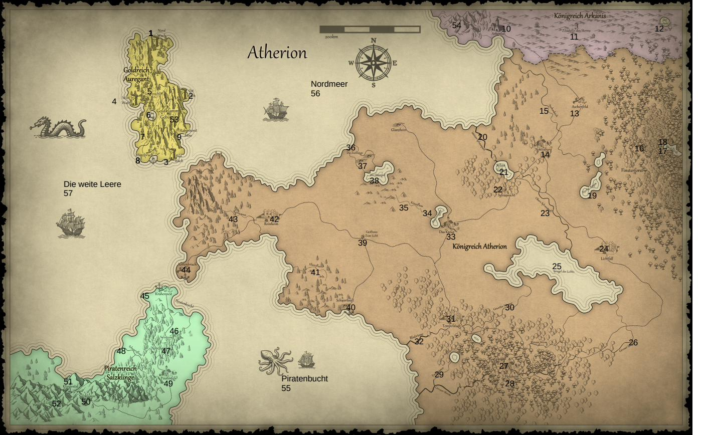
KARTENLEGENDE
Hauptstädte und markante Orte sind beschriftet. Für alle übrigen Orte (Dörfer, Flüsse, Seen, Gebirge) auf den Punkt zeigen oder tippen — Name und Beschreibung erscheinen dann.